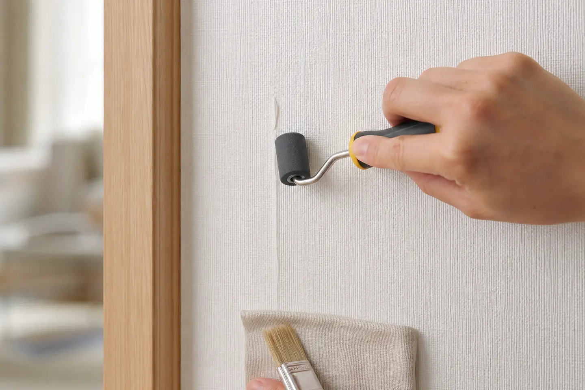

서대문구 벽지보수, 조명 작업 중 찢어진 벽지 부분보수로 감쪽같이 복원
이번 작업의 확인 포인트
손상 크기와 벽지 무늬, 들뜬 범위를 확인하고 주변 손상을 넓히지 않도록 정리한 뒤 표면 결을 맞춰 마감합니다.

서대문구 벽지보수, 조명 작업 중 찢어진 벽지 부분보수로 감쪽같이 복원

서대문구 벽지보수, 벽지 손상,
티 안 나게 작업해드리고 왔습니다 :)
이번 현장은 서대문구에 위치한 고객님댁입니다.
조명 수리 과정에서 커버를 분리하다가
벽지가 찢어지는 상황이 발생했고,
고객님께서 벽지 보수 전문가를 찾아보시다가,
홍프로집박사로 작업을 의뢰해주셨습니다 !
.JPG?type=w966)
처음 현장을 확인했을 때
손상 부위가 크진 않았지만,
위치가 은근히 눈에 잘 띄는 곳이라
그대로 두기엔 굉장히 거슬리는 상태였어요.
“부분보수”가 더 어려운 이유
많은 분들이 “조금 찢어진 거니까
간단히 붙이면 되는 거 아니야?”
라고 생각하시는데요,
사실은 반대입니다.
부분보수는 전체 도배보다
더 까다로운 작업
이에요.
.JPG?type=w966)
> 기존 벽지와 색감 맞추기
> 패턴, 결 방향 맞추기
> 이질감 없이 자연스럽게 연결하기
이 세 가지가 맞지 않으면
오히려 더 티가 나버리거든요.
작업 과정, 디테일이 결과를 만듭니다
우선 손상된 부위를 정리하면서
들뜬 부분이나 추가 손상이 생기지 않도록
최대한 안정적으로 면을 잡아줬습니다.
.JPG?type=w966)
이후
기존 벽지와 최대한 유사한 질감과 색감을 맞춰
보수 작업을 진행
했습니다.
특히 이번 현장은 조명 스위치 주변이라
작업 범위가 좁고 디테일이 중요한 위치
였기 때문에
경계가 보이지 않도록 연결하는 데 집중했습니다.

벽지를 감쪽같이 이식하고,
원래 그 벽지였던 것처럼 하기 위한
롤러작업
까지 깔끔하게 마무리! :)

마감 단계에서는
빛에 비춰봤을 때도 티가 나지 않도록
한 번 더 체크하며 정리해드렸습니다.
작업 후, 정말 “어디였지?” 싶은 상태
고객님께서 감탄하실정도로
자연스럽게 복원이 완료되었습니다 😊
부분보수는 단순히 “막아주는 작업”이 아니라
처음부터 아무 일도 없었던 것처럼 만드는
작업이라고 생각합니다.
우리가 생활하다보면
벽지에 아주 작게라도 손상 가는 일이 많은데요,
가구 이동하다 벽지 찢어진 경우,
조명/스위치 교체 중 손상된 경우,
아이가 긁거나 찍어서 생긴 손상
등이
생각보다 많습니다.
_(2).JPG?type=w966)
이런 경우, 전체 도배는 너무 아깝고
그렇다고 그냥 두기에는 눈에 너무 거슬리고 !!
그만 스트레스 받으세요~
홍프로 집수리의 벽지 부분보수로
충분히 깔끔하게 해결 가능
합니다 :)
홍프로집박사는 단순한 수리가 아니라
공간의 완성도를 복원한다는 마인드로
작업에 임하고 있습니다.
작은 손상 하나라도 눈에 거슬리지 않도록,
처음 상태처럼 자연스럽게 !!
혹시 집 안에
“계속 신경 쓰이는데 그냥 두고 있는 부분”
있으시면
부담 없이 문의 주세요
깔끔하게, 티 나지 않게
도와드리겠습니다
홍프로집박사는 오늘 소개해드린
서울은 물론, 인천, 경기 전 지역 방문
드립니다!
아래 이미지를 클릭하시면
홍프로집박사로 전화연결 됩니다.